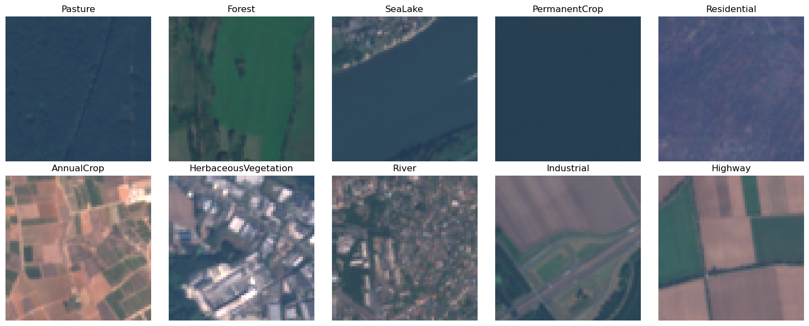

!pwd/home/annaboser/GEOG-288KC-geospatial-foundation-models2025-11-05 16:46:47,872 - INFO - Analysis results exported to: /home/annaboser/GEOG-288KC-geospatial-foundation-models/week1_output
2025-11-05 16:46:47,874 - INFO - Data exported - use load_week1_data() to reload['__all__',
'__builtins__',
'__cached__',
'__doc__',
'__file__',
'__loader__',
'__name__',
'__package__',
'__path__',
'__spec__',
'__version__',
'c01',
'calculate_band_statistics',
'calculate_ndvi',
'create_rgb_composite',
'create_scene_tiles',
'export_analysis_results',
'get_scene_info',
'get_subset_from_scene',
'load_sentinel2_bands',
'load_week1_data',
'normalize_band',
'plot_band_comparison',
'save_geotiff',
'search_STAC_scenes',
'search_sentinel2_scenes',
'setup_planetary_computer_auth',
'test_subset_functionality',
'verify_environment']Make sure you have access to a GPU so model training happens in a reasonable amount of time.
import numpy as np
import torch
# Set random seeds for reproducibility
torch.manual_seed(42)
np.random.seed(42)
# Device selection
if torch.cuda.is_available():
device = torch.device('cuda')
print(f"Using CUDA GPU: {torch.cuda.get_device_name(0)}")
elif torch.backends.mps.is_available():
device = torch.device('mps')
print("Using Apple Silicon MPS")
else:
device = torch.device('cpu')
print("Using CPU (training will be slower)")
print(f"PyTorch version: {torch.__version__}")Using CUDA GPU: NVIDIA L40S
PyTorch version: 2.8.0+cu128HuggingFace by default will try to download things like model weights and datasets to the shared conda environment, which we don’t individually have access to. Fix this with something like the code below:
import os
import pathlib
# Specify the full path to where you want your data to be located
# Replace with your preferred location
BASE = '/home/waves/generalist_vs_specialized_geoAI'
# Setup environment variables that are used by the HF library
os.environ["HF_HOME"] = os.path.join(BASE, "hfhome")
os.environ["HF_HUB_CACHE"] = os.path.join(BASE, "hub")
os.environ["HF_DATASETS_CACHE"] = os.path.join(BASE, "datasets")
os.environ["TRANSFORMERS_CACHE"] = os.path.join(BASE, "transformers")Terratorch makes your life easier if you organize your data in standard ways – this way you can easily use their generic datamodules.
img_1_image.tif and img_1_mask.tif.We can download EuroSAT and check that it does in fact follow this structure for a classification task.
I downloaded it this way on the terminal:
wget -c "https://zenodo.org/records/7711810/files/EuroSAT_MS.zip?download=1" -O /home/waves/generalist_vs_specialized_geoAI/EuroSAT/EuroSAT_MS.zipAs you can see, at the location of the dataset, EUROSAT_S2, there are 10 directories each with a class name.
# get the paths for each class type
class_paths = [item for item in Path(EUROSAT_S2).iterdir()]
print(class_paths)
# get the names for each class type
class_names = [p.name for p in class_paths]
print(class_names)[PosixPath('/home/waves/generalist_vs_specialized_geoAI/EuroSAT/EuroSAT_MS/Pasture'), PosixPath('/home/waves/generalist_vs_specialized_geoAI/EuroSAT/EuroSAT_MS/Forest'), PosixPath('/home/waves/generalist_vs_specialized_geoAI/EuroSAT/EuroSAT_MS/SeaLake'), PosixPath('/home/waves/generalist_vs_specialized_geoAI/EuroSAT/EuroSAT_MS/PermanentCrop'), PosixPath('/home/waves/generalist_vs_specialized_geoAI/EuroSAT/EuroSAT_MS/Residential'), PosixPath('/home/waves/generalist_vs_specialized_geoAI/EuroSAT/EuroSAT_MS/AnnualCrop'), PosixPath('/home/waves/generalist_vs_specialized_geoAI/EuroSAT/EuroSAT_MS/HerbaceousVegetation'), PosixPath('/home/waves/generalist_vs_specialized_geoAI/EuroSAT/EuroSAT_MS/River'), PosixPath('/home/waves/generalist_vs_specialized_geoAI/EuroSAT/EuroSAT_MS/Industrial'), PosixPath('/home/waves/generalist_vs_specialized_geoAI/EuroSAT/EuroSAT_MS/Highway')]
['Pasture', 'Forest', 'SeaLake', 'PermanentCrop', 'Residential', 'AnnualCrop', 'HerbaceousVegetation', 'River', 'Industrial', 'Highway']Each folder has images of that class organized in it, just as TerraTorch expects:
# You can see that each class is in fact organized in a separate folder.
# Print the first 10 files in the first folder
pasture_ims = [item.name for item in Path(class_paths[0]).iterdir()]
print(pasture_ims[0:10])['Pasture_665.tif', 'Pasture_1142.tif', 'Pasture_1284.tif', 'Pasture_204.tif', 'Pasture_69.tif', 'Pasture_1523.tif', 'Pasture_1951.tif', 'Pasture_1255.tif', 'Pasture_572.tif', 'Pasture_900.tif']To make your splits easily ingestible by TerraTorch’s DataModules, either make separate folders with different dataset splits in them or generate files that specify which images go in what split.
Because EuroSAT is not already organized into separate folders by split, I went and grabbed split filesfrom torchgeo’s implementation. I found them by looking at TorchGeo’s EuroSAT datamodule implementation.
import urllib
for split in ["train", "val", "test"]:
file_url = f"https://hf.co/datasets/torchgeo/eurosat/resolve/1ce6f1bfb56db63fd91b6ecc466ea67f2509774c/eurosat-{split}.txt"
urllib.request.urlretrieve(file_url, f"{EUROSAT_PATH}/eurosat-{split}.txt")You can download EuroSAT data using torchgeo too – and they have a nifty subset where there’s only 100 images for debugging:
from torchgeo.datasets import EuroSAT100
# Try without split parameter
eurosat = EuroSAT100(
root=DATA_PATH,
download=True,
)Through exploring what was downloaded at DATA_PATH, we have:
# Get the path for the first image available for each class type)
class_paths = [item for item in Path(EUROSAT_S2).iterdir()]
image_sample = [next(folder.iterdir()) for folder in class_paths]
# read all 10 sample images
ims = [rasterio.open(image).read() for image in image_sample]
# Print statistics for the first image
print("Shape:", ims[1].shape)
print("Mean:", ims[1].mean(axis=(1,2)))
print("Std:", ims[1].std(axis=(1,2)))Shape: (13, 64, 64)
Mean: [1111.66186523 845.85400391 903.02685547 526.63574219 1144.3815918
3190.26049805 3860.60302734 3812.14526367 1352.38745117 9.83789062
2089.54492188 914.97509766 4252.33959961]
Std: [ 8.68809973 38.35416746 92.97976963 107.77898995 109.07139847
620.26808386 755.93244148 778.82560054 166.36251341 0.87978038
177.60548399 107.03753341 730.85870818]Note that the sentinel 2 data from EuroSat is L1C top of atmosphere reflectance. It’s important to get this right when matching it to the right normalizations and proper model specifications
def to_rgb(img):
'''
Function to turn a rasterio raster from EuroSAT into an RGB image.
'''
# select the red, green, and blue bands
rgb = img[[3,2,1]].astype(float)
# following EauroSAT guidelines on their github repo for visualization,
# clip them to a max of 2750 (there is a longer tail but very few values above this)
# and then normalize to 0-1
rgb = np.clip(rgb, 0, 2750) / 2750
# go from bgr to rgb
return np.transpose(rgb, (1,2,0))
fig, axes = plt.subplots(2, 5, figsize=(15, 6))
axes = axes.ravel()
for i, (ax, img, name) in enumerate(zip(axes, ims, class_names)):
rgb = to_rgb(img)
ax.imshow(rgb)
ax.set_title(name)
ax.axis("off")
plt.tight_layout()
plt.show()
Multi source registry with 1360 items: terratorch: Registry with 92 registered items | timm: timm registry with 1268 registered backbones# List all the available backbones from different sources:
for name, source in BACKBONE_REGISTRY._sources.items():
print(f"\n=== {name} ===")
print(list(source))
=== terratorch ===
['dofa_small_patch16_224', 'dofa_base_patch16_224', 'dofa_large_patch16_224', 'prithvi_eo_tiny', 'prithvi_eo_v1_100', 'prithvi_eo_v2_tiny_tl', 'prithvi_eo_v2_100_tl', 'prithvi_eo_v2_300', 'prithvi_eo_v2_600', 'prithvi_eo_v2_300_tl', 'prithvi_eo_v2_600_tl', 'terramind_v1_base', 'terramind_v1_base_tim', 'terramind_v01_base', 'terramind_v01_base_tim', 'terramind_v1_large', 'terramind_v1_large_tim', 'terramind_v1_tiny', 'terramind_v1_tiny_tim', 'terramind_v1_small', 'terramind_v1_small_tim', 'terramind_v1_tokenizer_s2l2a', 'terramind_v1_tokenizer_s1rtc', 'terramind_v1_tokenizer_s1grd', 'terramind_v1_tokenizer_dem', 'terramind_v1_tokenizer_lulc', 'terramind_v1_tokenizer_ndvi', 'ssl4eol_resnet18_landsat_tm_toa_moco', 'ssl4eol_resnet18_landsat_tm_toa_simclr', 'ssl4eol_resnet18_landsat_etm_toa_moco', 'ssl4eol_resnet18_landsat_etm_toa_simclr', 'ssl4eol_resnet18_landsat_etm_sr_moco', 'ssl4eol_resnet18_landsat_etm_sr_simclr', 'ssl4eol_resnet18_landsat_oli_tirs_toa_moco', 'ssl4eol_resnet18_landsat_oli_tirs_toa_simclr', 'ssl4eol_resnet18_landsat_oli_sr_moco', 'ssl4eol_resnet18_landsat_oli_sr_simclr', 'ssl4eos12_resnet18_sentinel2_all_moco', 'ssl4eos12_resnet18_sentinel2_rgb_moco', 'seco_resnet18_sentinel2_rgb_seco', 'fmow_resnet50_fmow_rgb_gassl', 'ssl4eol_resnet50_landsat_tm_toa_moco', 'ssl4eol_resnet50_landsat_tm_toa_simclr', 'ssl4eol_resnet50_landsat_etm_toa_moco', 'ssl4eol_resnet50_landsat_etm_toa_simclr', 'ssl4eol_resnet50_landsat_etm_sr_moco', 'ssl4eol_resnet50_landsat_etm_sr_simclr', 'ssl4eol_resnet50_landsat_oli_tirs_toa_moco', 'ssl4eol_resnet50_landsat_oli_tirs_toa_simclr', 'ssl4eol_resnet50_landsat_oli_sr_moco', 'ssl4eol_resnet50_landsat_oli_sr_simclr', 'ssl4eos12_resnet50_sentinel1_all_decur', 'ssl4eos12_resnet50_sentinel1_all_moco', 'ssl4eos12_resnet50_sentinel2_all_decur', 'ssl4eos12_resnet50_sentinel2_all_dino', 'ssl4eos12_resnet50_sentinel2_all_moco', 'ssl4eos12_resnet50_sentinel2_rgb_moco', 'seco_resnet50_sentinel2_rgb_seco', 'satlas_resnet50_sentinel2_mi_ms_satlas', 'satlas_resnet50_sentinel2_mi_rgb_satlas', 'satlas_resnet50_sentinel2_si_ms_satlas', 'satlas_resnet50_sentinel2_si_rgb_satlas', 'satlas_resnet152_sentinel2_mi_ms', 'satlas_resnet152_sentinel2_mi_rgb', 'satlas_resnet152_sentinel2_si_ms_satlas', 'satlas_resnet152_sentinel2_si_rgb_satlas', 'satlas_swin_t_sentinel2_mi_ms', 'satlas_swin_t_sentinel2_mi_rgb', 'satlas_swin_t_sentinel2_si_ms', 'satlas_swin_t_sentinel2_si_rgb', 'satlas_swin_b_sentinel2_mi_ms', 'satlas_swin_b_sentinel2_mi_rgb', 'satlas_swin_b_sentinel2_si_ms', 'satlas_swin_b_sentinel2_si_rgb', 'satlas_swin_b_naip_mi_rgb', 'satlas_swin_b_naip_si_rgb', 'satlas_swin_b_landsat_mi_ms', 'satlas_swin_b_landsat_mi_rgb', 'satlas_swin_b_sentinel1_mi', 'satlas_swin_b_sentinel1_si', 'ssl4eol_vit_small_patch16_224_landsat_tm_toa_moco', 'ssl4eol_vit_small_patch16_224_landsat_tm_toa_simclr', 'ssl4eol_vit_small_patch16_224_landsat_etm_toa_moco', 'ssl4eol_vit_small_patch16_224_landsat_etm_toa_simclr', 'ssl4eol_vit_small_patch16_224_landsat_etm_sr_moco', 'ssl4eol_vit_small_patch16_224_landsat_etm_sr_simclr', 'ssl4eol_vit_small_patch16_224_landsat_oli_tirs_toa_simclr', 'ssl4eol_vit_small_patch16_224_landsat_oli_sr_moco', 'ssl4eol_vit_small_patch16_224_landsat_oli_sr_simclr', 'ssl4eos12_vit_small_patch16_224_sentinel2_all_dino', 'ssl4eos12_vit_small_patch16_224_sentinel2_all_moco', 'UNet']
=== timm ===
['aimv2_1b_patch14_224', 'aimv2_1b_patch14_336', 'aimv2_1b_patch14_448', 'aimv2_3b_patch14_224', 'aimv2_3b_patch14_336', 'aimv2_3b_patch14_448', 'aimv2_huge_patch14_224', 'aimv2_huge_patch14_336', 'aimv2_huge_patch14_448', 'aimv2_large_patch14_224', 'aimv2_large_patch14_336', 'aimv2_large_patch14_448', 'bat_resnext26ts', 'beit3_base_patch16_224', 'beit3_giant_patch14_224', 'beit3_giant_patch14_336', 'beit3_large_patch16_224', 'beit_base_patch16_224', 'beit_base_patch16_384', 'beit_large_patch16_224', 'beit_large_patch16_384', 'beit_large_patch16_512', 'beitv2_base_patch16_224', 'beitv2_large_patch16_224', 'botnet26t_256', 'botnet50ts_256', 'caformer_b36', 'caformer_m36', 'caformer_s18', 'caformer_s36', 'cait_m36_384', 'cait_m48_448', 'cait_s24_224', 'cait_s24_384', 'cait_s36_384', 'cait_xs24_384', 'cait_xxs24_224', 'cait_xxs24_384', 'cait_xxs36_224', 'cait_xxs36_384', 'clay_v1_base', 'coat_lite_medium', 'coat_lite_medium_384', 'coat_lite_mini', 'coat_lite_small', 'coat_lite_tiny', 'coat_mini', 'coat_small', 'coat_tiny', 'coatnet_0_224', 'coatnet_0_rw_224', 'coatnet_1_224', 'coatnet_1_rw_224', 'coatnet_2_224', 'coatnet_2_rw_224', 'coatnet_3_224', 'coatnet_3_rw_224', 'coatnet_4_224', 'coatnet_5_224', 'coatnet_bn_0_rw_224', 'coatnet_nano_cc_224', 'coatnet_nano_rw_224', 'coatnet_pico_rw_224', 'coatnet_rmlp_0_rw_224', 'coatnet_rmlp_1_rw2_224', 'coatnet_rmlp_1_rw_224', 'coatnet_rmlp_2_rw_224', 'coatnet_rmlp_2_rw_384', 'coatnet_rmlp_3_rw_224', 'coatnet_rmlp_nano_rw_224', 'coatnext_nano_rw_224', 'convformer_b36', 'convformer_m36', 'convformer_s18', 'convformer_s36', 'convit_base', 'convit_small', 'convit_tiny', 'convmixer_768_32', 'convmixer_1024_20_ks9_p14', 'convmixer_1536_20', 'convnext_atto', 'convnext_atto_ols', 'convnext_atto_rms', 'convnext_base', 'convnext_femto', 'convnext_femto_ols', 'convnext_large', 'convnext_large_mlp', 'convnext_nano', 'convnext_nano_ols', 'convnext_pico', 'convnext_pico_ols', 'convnext_small', 'convnext_tiny', 'convnext_tiny_hnf', 'convnext_xlarge', 'convnext_xxlarge', 'convnext_zepto_rms', 'convnext_zepto_rms_ols', 'convnextv2_atto', 'convnextv2_base', 'convnextv2_femto', 'convnextv2_huge', 'convnextv2_large', 'convnextv2_nano', 'convnextv2_pico', 'convnextv2_small', 'convnextv2_tiny', 'crossvit_9_240', 'crossvit_9_dagger_240', 'crossvit_15_240', 'crossvit_15_dagger_240', 'crossvit_15_dagger_408', 'crossvit_18_240', 'crossvit_18_dagger_240', 'crossvit_18_dagger_408', 'crossvit_base_240', 'crossvit_small_240', 'crossvit_tiny_240', 'cs3darknet_focus_l', 'cs3darknet_focus_m', 'cs3darknet_focus_s', 'cs3darknet_focus_x', 'cs3darknet_l', 'cs3darknet_m', 'cs3darknet_s', 'cs3darknet_x', 'cs3edgenet_x', 'cs3se_edgenet_x', 'cs3sedarknet_l', 'cs3sedarknet_x', 'cs3sedarknet_xdw', 'cspdarknet53', 'cspresnet50', 'cspresnet50d', 'cspresnet50w', 'cspresnext50', 'darknet17', 'darknet21', 'darknet53', 'darknetaa53', 'davit_base', 'davit_base_fl', 'davit_giant', 'davit_huge', 'davit_huge_fl', 'davit_large', 'davit_small', 'davit_tiny', 'deit3_base_patch16_224', 'deit3_base_patch16_384', 'deit3_huge_patch14_224', 'deit3_large_patch16_224', 'deit3_large_patch16_384', 'deit3_medium_patch16_224', 'deit3_small_patch16_224', 'deit3_small_patch16_384', 'deit_base_distilled_patch16_224', 'deit_base_distilled_patch16_384', 'deit_base_patch16_224', 'deit_base_patch16_384', 'deit_small_distilled_patch16_224', 'deit_small_patch16_224', 'deit_tiny_distilled_patch16_224', 'deit_tiny_patch16_224', 'densenet121', 'densenet161', 'densenet169', 'densenet201', 'densenet264d', 'densenetblur121d', 'dla34', 'dla46_c', 'dla46x_c', 'dla60', 'dla60_res2net', 'dla60_res2next', 'dla60x', 'dla60x_c', 'dla102', 'dla102x', 'dla102x2', 'dla169', 'dm_nfnet_f0', 'dm_nfnet_f1', 'dm_nfnet_f2', 'dm_nfnet_f3', 'dm_nfnet_f4', 'dm_nfnet_f5', 'dm_nfnet_f6', 'dpn48b', 'dpn68', 'dpn68b', 'dpn92', 'dpn98', 'dpn107', 'dpn131', 'eca_botnext26ts_256', 'eca_halonext26ts', 'eca_nfnet_l0', 'eca_nfnet_l1', 'eca_nfnet_l2', 'eca_nfnet_l3', 'eca_resnet33ts', 'eca_resnext26ts', 'eca_vovnet39b', 'ecaresnet26t', 'ecaresnet50d', 'ecaresnet50d_pruned', 'ecaresnet50t', 'ecaresnet101d', 'ecaresnet101d_pruned', 'ecaresnet200d', 'ecaresnet269d', 'ecaresnetlight', 'ecaresnext26t_32x4d', 'ecaresnext50t_32x4d', 'edgenext_base', 'edgenext_small', 'edgenext_small_rw', 'edgenext_x_small', 'edgenext_xx_small', 'efficientformer_l1', 'efficientformer_l3', 'efficientformer_l7', 'efficientformerv2_l', 'efficientformerv2_s0', 'efficientformerv2_s1', 'efficientformerv2_s2', 'efficientnet_b0', 'efficientnet_b0_g8_gn', 'efficientnet_b0_g16_evos', 'efficientnet_b0_gn', 'efficientnet_b1', 'efficientnet_b1_pruned', 'efficientnet_b2', 'efficientnet_b2_pruned', 'efficientnet_b3', 'efficientnet_b3_g8_gn', 'efficientnet_b3_gn', 'efficientnet_b3_pruned', 'efficientnet_b4', 'efficientnet_b5', 'efficientnet_b6', 'efficientnet_b7', 'efficientnet_b8', 'efficientnet_blur_b0', 'efficientnet_cc_b0_4e', 'efficientnet_cc_b0_8e', 'efficientnet_cc_b1_8e', 'efficientnet_el', 'efficientnet_el_pruned', 'efficientnet_em', 'efficientnet_es', 'efficientnet_es_pruned', 'efficientnet_h_b5', 'efficientnet_l2', 'efficientnet_lite0', 'efficientnet_lite1', 'efficientnet_lite2', 'efficientnet_lite3', 'efficientnet_lite4', 'efficientnet_x_b3', 'efficientnet_x_b5', 'efficientnetv2_l', 'efficientnetv2_m', 'efficientnetv2_rw_m', 'efficientnetv2_rw_s', 'efficientnetv2_rw_t', 'efficientnetv2_s', 'efficientnetv2_xl', 'efficientvit_b0', 'efficientvit_b1', 'efficientvit_b2', 'efficientvit_b3', 'efficientvit_l1', 'efficientvit_l2', 'efficientvit_l3', 'efficientvit_m0', 'efficientvit_m1', 'efficientvit_m2', 'efficientvit_m3', 'efficientvit_m4', 'efficientvit_m5', 'ese_vovnet19b_dw', 'ese_vovnet19b_slim', 'ese_vovnet19b_slim_dw', 'ese_vovnet39b', 'ese_vovnet39b_evos', 'ese_vovnet57b', 'ese_vovnet99b', 'eva02_base_patch14_224', 'eva02_base_patch14_448', 'eva02_base_patch16_clip_224', 'eva02_enormous_patch14_clip_224', 'eva02_large_patch14_224', 'eva02_large_patch14_448', 'eva02_large_patch14_clip_224', 'eva02_large_patch14_clip_336', 'eva02_small_patch14_224', 'eva02_small_patch14_336', 'eva02_tiny_patch14_224', 'eva02_tiny_patch14_336', 'eva_giant_patch14_224', 'eva_giant_patch14_336', 'eva_giant_patch14_560', 'eva_giant_patch14_clip_224', 'eva_large_patch14_196', 'eva_large_patch14_336', 'fasternet_l', 'fasternet_m', 'fasternet_s', 'fasternet_t0', 'fasternet_t1', 'fasternet_t2', 'fastvit_ma36', 'fastvit_mci0', 'fastvit_mci1', 'fastvit_mci2', 'fastvit_s12', 'fastvit_sa12', 'fastvit_sa24', 'fastvit_sa36', 'fastvit_t8', 'fastvit_t12', 'fbnetc_100', 'fbnetv3_b', 'fbnetv3_d', 'fbnetv3_g', 'flexivit_base', 'flexivit_large', 'flexivit_small', 'focalnet_base_lrf', 'focalnet_base_srf', 'focalnet_huge_fl3', 'focalnet_huge_fl4', 'focalnet_large_fl3', 'focalnet_large_fl4', 'focalnet_small_lrf', 'focalnet_small_srf', 'focalnet_tiny_lrf', 'focalnet_tiny_srf', 'focalnet_xlarge_fl3', 'focalnet_xlarge_fl4', 'gc_efficientnetv2_rw_t', 'gcresnet33ts', 'gcresnet50t', 'gcresnext26ts', 'gcresnext50ts', 'gcvit_base', 'gcvit_small', 'gcvit_tiny', 'gcvit_xtiny', 'gcvit_xxtiny', 'gernet_l', 'gernet_m', 'gernet_s', 'ghostnet_050', 'ghostnet_100', 'ghostnet_130', 'ghostnetv2_100', 'ghostnetv2_130', 'ghostnetv2_160', 'ghostnetv3_050', 'ghostnetv3_100', 'ghostnetv3_130', 'ghostnetv3_160', 'gmixer_12_224', 'gmixer_24_224', 'gmlp_b16_224', 'gmlp_s16_224', 'gmlp_ti16_224', 'halo2botnet50ts_256', 'halonet26t', 'halonet50ts', 'halonet_h1', 'haloregnetz_b', 'hardcorenas_a', 'hardcorenas_b', 'hardcorenas_c', 'hardcorenas_d', 'hardcorenas_e', 'hardcorenas_f', 'hgnet_base', 'hgnet_small', 'hgnet_tiny', 'hgnetv2_b0', 'hgnetv2_b1', 'hgnetv2_b2', 'hgnetv2_b3', 'hgnetv2_b4', 'hgnetv2_b5', 'hgnetv2_b6', 'hiera_base_224', 'hiera_base_abswin_256', 'hiera_base_plus_224', 'hiera_huge_224', 'hiera_large_224', 'hiera_small_224', 'hiera_small_abswin_256', 'hiera_tiny_224', 'hieradet_small', 'hrnet_w18', 'hrnet_w18_small', 'hrnet_w18_small_v2', 'hrnet_w18_ssld', 'hrnet_w30', 'hrnet_w32', 'hrnet_w40', 'hrnet_w44', 'hrnet_w48', 'hrnet_w48_ssld', 'hrnet_w64', 'inception_next_atto', 'inception_next_base', 'inception_next_small', 'inception_next_tiny', 'inception_resnet_v2', 'inception_v3', 'inception_v4', 'lambda_resnet26rpt_256', 'lambda_resnet26t', 'lambda_resnet50ts', 'lamhalobotnet50ts_256', 'lcnet_035', 'lcnet_050', 'lcnet_075', 'lcnet_100', 'lcnet_150', 'legacy_senet154', 'legacy_seresnet18', 'legacy_seresnet34', 'legacy_seresnet50', 'legacy_seresnet101', 'legacy_seresnet152', 'legacy_seresnext26_32x4d', 'legacy_seresnext50_32x4d', 'legacy_seresnext101_32x4d', 'legacy_xception', 'levit_128', 'levit_128s', 'levit_192', 'levit_256', 'levit_256d', 'levit_384', 'levit_384_s8', 'levit_512', 'levit_512_s8', 'levit_512d', 'levit_conv_128', 'levit_conv_128s', 'levit_conv_192', 'levit_conv_256', 'levit_conv_256d', 'levit_conv_384', 'levit_conv_384_s8', 'levit_conv_512', 'levit_conv_512_s8', 'levit_conv_512d', 'mambaout_base', 'mambaout_base_plus_rw', 'mambaout_base_short_rw', 'mambaout_base_tall_rw', 'mambaout_base_wide_rw', 'mambaout_femto', 'mambaout_kobe', 'mambaout_small', 'mambaout_small_rw', 'mambaout_tiny', 'maxvit_base_tf_224', 'maxvit_base_tf_384', 'maxvit_base_tf_512', 'maxvit_large_tf_224', 'maxvit_large_tf_384', 'maxvit_large_tf_512', 'maxvit_nano_rw_256', 'maxvit_pico_rw_256', 'maxvit_rmlp_base_rw_224', 'maxvit_rmlp_base_rw_384', 'maxvit_rmlp_nano_rw_256', 'maxvit_rmlp_pico_rw_256', 'maxvit_rmlp_small_rw_224', 'maxvit_rmlp_small_rw_256', 'maxvit_rmlp_tiny_rw_256', 'maxvit_small_tf_224', 'maxvit_small_tf_384', 'maxvit_small_tf_512', 'maxvit_tiny_pm_256', 'maxvit_tiny_rw_224', 'maxvit_tiny_rw_256', 'maxvit_tiny_tf_224', 'maxvit_tiny_tf_384', 'maxvit_tiny_tf_512', 'maxvit_xlarge_tf_224', 'maxvit_xlarge_tf_384', 'maxvit_xlarge_tf_512', 'maxxvit_rmlp_nano_rw_256', 'maxxvit_rmlp_small_rw_256', 'maxxvit_rmlp_tiny_rw_256', 'maxxvitv2_nano_rw_256', 'maxxvitv2_rmlp_base_rw_224', 'maxxvitv2_rmlp_base_rw_384', 'maxxvitv2_rmlp_large_rw_224', 'mixer_b16_224', 'mixer_b32_224', 'mixer_l16_224', 'mixer_l32_224', 'mixer_s16_224', 'mixer_s32_224', 'mixnet_l', 'mixnet_m', 'mixnet_s', 'mixnet_xl', 'mixnet_xxl', 'mnasnet_050', 'mnasnet_075', 'mnasnet_100', 'mnasnet_140', 'mnasnet_small', 'mobilenet_edgetpu_100', 'mobilenet_edgetpu_v2_l', 'mobilenet_edgetpu_v2_m', 'mobilenet_edgetpu_v2_s', 'mobilenet_edgetpu_v2_xs', 'mobilenetv1_100', 'mobilenetv1_100h', 'mobilenetv1_125', 'mobilenetv2_035', 'mobilenetv2_050', 'mobilenetv2_075', 'mobilenetv2_100', 'mobilenetv2_110d', 'mobilenetv2_120d', 'mobilenetv2_140', 'mobilenetv3_large_075', 'mobilenetv3_large_100', 'mobilenetv3_large_150d', 'mobilenetv3_rw', 'mobilenetv3_small_050', 'mobilenetv3_small_075', 'mobilenetv3_small_100', 'mobilenetv4_conv_aa_large', 'mobilenetv4_conv_aa_medium', 'mobilenetv4_conv_blur_medium', 'mobilenetv4_conv_large', 'mobilenetv4_conv_medium', 'mobilenetv4_conv_small', 'mobilenetv4_conv_small_035', 'mobilenetv4_conv_small_050', 'mobilenetv4_hybrid_large', 'mobilenetv4_hybrid_large_075', 'mobilenetv4_hybrid_medium', 'mobilenetv4_hybrid_medium_075', 'mobilenetv5_300m', 'mobilenetv5_300m_enc', 'mobilenetv5_base', 'mobileone_s0', 'mobileone_s1', 'mobileone_s2', 'mobileone_s3', 'mobileone_s4', 'mobilevit_s', 'mobilevit_xs', 'mobilevit_xxs', 'mobilevitv2_050', 'mobilevitv2_075', 'mobilevitv2_100', 'mobilevitv2_125', 'mobilevitv2_150', 'mobilevitv2_175', 'mobilevitv2_200', 'mvitv2_base', 'mvitv2_base_cls', 'mvitv2_huge_cls', 'mvitv2_large', 'mvitv2_large_cls', 'mvitv2_small', 'mvitv2_small_cls', 'mvitv2_tiny', 'naflexvit_base_patch16_gap', 'naflexvit_base_patch16_map', 'naflexvit_base_patch16_par_gap', 'naflexvit_base_patch16_parfac_gap', 'naflexvit_base_patch16_siglip', 'naflexvit_so150m2_patch16_reg1_gap', 'naflexvit_so150m2_patch16_reg1_map', 'naflexvit_so400m_patch16_siglip', 'nasnetalarge', 'nest_base', 'nest_base_jx', 'nest_small', 'nest_small_jx', 'nest_tiny', 'nest_tiny_jx', 'nextvit_base', 'nextvit_large', 'nextvit_small', 'nf_ecaresnet26', 'nf_ecaresnet50', 'nf_ecaresnet101', 'nf_regnet_b0', 'nf_regnet_b1', 'nf_regnet_b2', 'nf_regnet_b3', 'nf_regnet_b4', 'nf_regnet_b5', 'nf_resnet26', 'nf_resnet50', 'nf_resnet101', 'nf_seresnet26', 'nf_seresnet50', 'nf_seresnet101', 'nfnet_f0', 'nfnet_f1', 'nfnet_f2', 'nfnet_f3', 'nfnet_f4', 'nfnet_f5', 'nfnet_f6', 'nfnet_f7', 'nfnet_l0', 'pit_b_224', 'pit_b_distilled_224', 'pit_s_224', 'pit_s_distilled_224', 'pit_ti_224', 'pit_ti_distilled_224', 'pit_xs_224', 'pit_xs_distilled_224', 'pnasnet5large', 'poolformer_m36', 'poolformer_m48', 'poolformer_s12', 'poolformer_s24', 'poolformer_s36', 'poolformerv2_m36', 'poolformerv2_m48', 'poolformerv2_s12', 'poolformerv2_s24', 'poolformerv2_s36', 'prithvi_swin_B', 'prithvi_swin_L', 'pvt_v2_b0', 'pvt_v2_b1', 'pvt_v2_b2', 'pvt_v2_b2_li', 'pvt_v2_b3', 'pvt_v2_b4', 'pvt_v2_b5', 'rdnet_base', 'rdnet_large', 'rdnet_small', 'rdnet_tiny', 'regnetv_040', 'regnetv_064', 'regnetx_002', 'regnetx_004', 'regnetx_004_tv', 'regnetx_006', 'regnetx_008', 'regnetx_016', 'regnetx_032', 'regnetx_040', 'regnetx_064', 'regnetx_080', 'regnetx_120', 'regnetx_160', 'regnetx_320', 'regnety_002', 'regnety_004', 'regnety_006', 'regnety_008', 'regnety_008_tv', 'regnety_016', 'regnety_032', 'regnety_040', 'regnety_040_sgn', 'regnety_064', 'regnety_080', 'regnety_080_tv', 'regnety_120', 'regnety_160', 'regnety_320', 'regnety_640', 'regnety_1280', 'regnety_2560', 'regnetz_005', 'regnetz_040', 'regnetz_040_h', 'regnetz_b16', 'regnetz_b16_evos', 'regnetz_c16', 'regnetz_c16_evos', 'regnetz_d8', 'regnetz_d8_evos', 'regnetz_d32', 'regnetz_e8', 'repghostnet_050', 'repghostnet_058', 'repghostnet_080', 'repghostnet_100', 'repghostnet_111', 'repghostnet_130', 'repghostnet_150', 'repghostnet_200', 'repvgg_a0', 'repvgg_a1', 'repvgg_a2', 'repvgg_b0', 'repvgg_b1', 'repvgg_b1g4', 'repvgg_b2', 'repvgg_b2g4', 'repvgg_b3', 'repvgg_b3g4', 'repvgg_d2se', 'repvit_m0_9', 'repvit_m1', 'repvit_m1_0', 'repvit_m1_1', 'repvit_m1_5', 'repvit_m2', 'repvit_m2_3', 'repvit_m3', 'res2net50_14w_8s', 'res2net50_26w_4s', 'res2net50_26w_6s', 'res2net50_26w_8s', 'res2net50_48w_2s', 'res2net50d', 'res2net101_26w_4s', 'res2net101d', 'res2next50', 'resmlp_12_224', 'resmlp_24_224', 'resmlp_36_224', 'resmlp_big_24_224', 'resnest14d', 'resnest26d', 'resnest50d', 'resnest50d_1s4x24d', 'resnest50d_4s2x40d', 'resnest101e', 'resnest200e', 'resnest269e', 'resnet10t', 'resnet14t', 'resnet18', 'resnet18d', 'resnet26', 'resnet26d', 'resnet26t', 'resnet32ts', 'resnet33ts', 'resnet34', 'resnet34d', 'resnet50', 'resnet50_clip', 'resnet50_clip_gap', 'resnet50_gn', 'resnet50_mlp', 'resnet50c', 'resnet50d', 'resnet50s', 'resnet50t', 'resnet50x4_clip', 'resnet50x4_clip_gap', 'resnet50x16_clip', 'resnet50x16_clip_gap', 'resnet50x64_clip', 'resnet50x64_clip_gap', 'resnet51q', 'resnet61q', 'resnet101', 'resnet101_clip', 'resnet101_clip_gap', 'resnet101c', 'resnet101d', 'resnet101s', 'resnet152', 'resnet152c', 'resnet152d', 'resnet152s', 'resnet200', 'resnet200d', 'resnetaa34d', 'resnetaa50', 'resnetaa50d', 'resnetaa101d', 'resnetblur18', 'resnetblur50', 'resnetblur50d', 'resnetblur101d', 'resnetrs50', 'resnetrs101', 'resnetrs152', 'resnetrs200', 'resnetrs270', 'resnetrs350', 'resnetrs420', 'resnetv2_18', 'resnetv2_18d', 'resnetv2_34', 'resnetv2_34d', 'resnetv2_50', 'resnetv2_50d', 'resnetv2_50d_evos', 'resnetv2_50d_frn', 'resnetv2_50d_gn', 'resnetv2_50t', 'resnetv2_50x1_bit', 'resnetv2_50x3_bit', 'resnetv2_101', 'resnetv2_101d', 'resnetv2_101x1_bit', 'resnetv2_101x3_bit', 'resnetv2_152', 'resnetv2_152d', 'resnetv2_152x2_bit', 'resnetv2_152x4_bit', 'resnext26ts', 'resnext50_32x4d', 'resnext50d_32x4d', 'resnext101_32x4d', 'resnext101_32x8d', 'resnext101_32x16d', 'resnext101_32x32d', 'resnext101_64x4d', 'rexnet_100', 'rexnet_130', 'rexnet_150', 'rexnet_200', 'rexnet_300', 'rexnetr_100', 'rexnetr_130', 'rexnetr_150', 'rexnetr_200', 'rexnetr_300', 'sam2_hiera_base_plus', 'sam2_hiera_large', 'sam2_hiera_small', 'sam2_hiera_tiny', 'samvit_base_patch16', 'samvit_base_patch16_224', 'samvit_huge_patch16', 'samvit_large_patch16', 'sebotnet33ts_256', 'sedarknet21', 'sehalonet33ts', 'selecsls42', 'selecsls42b', 'selecsls60', 'selecsls60b', 'selecsls84', 'semnasnet_050', 'semnasnet_075', 'semnasnet_100', 'semnasnet_140', 'senet154', 'sequencer2d_l', 'sequencer2d_m', 'sequencer2d_s', 'seresnet18', 'seresnet33ts', 'seresnet34', 'seresnet50', 'seresnet50t', 'seresnet101', 'seresnet152', 'seresnet152d', 'seresnet200d', 'seresnet269d', 'seresnetaa50d', 'seresnext26d_32x4d', 'seresnext26t_32x4d', 'seresnext26ts', 'seresnext50_32x4d', 'seresnext101_32x4d', 'seresnext101_32x8d', 'seresnext101_64x4d', 'seresnext101d_32x8d', 'seresnextaa101d_32x8d', 'seresnextaa201d_32x8d', 'shvit_s1', 'shvit_s2', 'shvit_s3', 'shvit_s4', 'skresnet18', 'skresnet34', 'skresnet50', 'skresnet50d', 'skresnext50_32x4d', 'spnasnet_100', 'starnet_s1', 'starnet_s2', 'starnet_s3', 'starnet_s4', 'starnet_s050', 'starnet_s100', 'starnet_s150', 'swiftformer_l1', 'swiftformer_l3', 'swiftformer_s', 'swiftformer_xs', 'swin_base_patch4_window7_224', 'swin_base_patch4_window12_384', 'swin_large_patch4_window7_224', 'swin_large_patch4_window12_384', 'swin_s3_base_224', 'swin_s3_small_224', 'swin_s3_tiny_224', 'swin_small_patch4_window7_224', 'swin_tiny_patch4_window7_224', 'swinv2_base_window8_256', 'swinv2_base_window12_192', 'swinv2_base_window12to16_192to256', 'swinv2_base_window12to24_192to384', 'swinv2_base_window16_256', 'swinv2_cr_base_224', 'swinv2_cr_base_384', 'swinv2_cr_base_ns_224', 'swinv2_cr_giant_224', 'swinv2_cr_giant_384', 'swinv2_cr_huge_224', 'swinv2_cr_huge_384', 'swinv2_cr_large_224', 'swinv2_cr_large_384', 'swinv2_cr_small_224', 'swinv2_cr_small_384', 'swinv2_cr_small_ns_224', 'swinv2_cr_small_ns_256', 'swinv2_cr_tiny_224', 'swinv2_cr_tiny_384', 'swinv2_cr_tiny_ns_224', 'swinv2_large_window12_192', 'swinv2_large_window12to16_192to256', 'swinv2_large_window12to24_192to384', 'swinv2_small_window8_256', 'swinv2_small_window16_256', 'swinv2_tiny_window8_256', 'swinv2_tiny_window16_256', 'test_byobnet', 'test_convnext', 'test_convnext2', 'test_convnext3', 'test_efficientnet', 'test_efficientnet_evos', 'test_efficientnet_gn', 'test_efficientnet_ln', 'test_mambaout', 'test_nfnet', 'test_resnet', 'test_vit', 'test_vit2', 'test_vit3', 'test_vit4', 'tf_efficientnet_b0', 'tf_efficientnet_b1', 'tf_efficientnet_b2', 'tf_efficientnet_b3', 'tf_efficientnet_b4', 'tf_efficientnet_b5', 'tf_efficientnet_b6', 'tf_efficientnet_b7', 'tf_efficientnet_b8', 'tf_efficientnet_cc_b0_4e', 'tf_efficientnet_cc_b0_8e', 'tf_efficientnet_cc_b1_8e', 'tf_efficientnet_el', 'tf_efficientnet_em', 'tf_efficientnet_es', 'tf_efficientnet_l2', 'tf_efficientnet_lite0', 'tf_efficientnet_lite1', 'tf_efficientnet_lite2', 'tf_efficientnet_lite3', 'tf_efficientnet_lite4', 'tf_efficientnetv2_b0', 'tf_efficientnetv2_b1', 'tf_efficientnetv2_b2', 'tf_efficientnetv2_b3', 'tf_efficientnetv2_l', 'tf_efficientnetv2_m', 'tf_efficientnetv2_s', 'tf_efficientnetv2_xl', 'tf_mixnet_l', 'tf_mixnet_m', 'tf_mixnet_s', 'tf_mobilenetv3_large_075', 'tf_mobilenetv3_large_100', 'tf_mobilenetv3_large_minimal_100', 'tf_mobilenetv3_small_075', 'tf_mobilenetv3_small_100', 'tf_mobilenetv3_small_minimal_100', 'tiny_vit_5m_224', 'tiny_vit_11m_224', 'tiny_vit_21m_224', 'tiny_vit_21m_384', 'tiny_vit_21m_512', 'tinynet_a', 'tinynet_b', 'tinynet_c', 'tinynet_d', 'tinynet_e', 'tnt_b_patch16_224', 'tnt_s_legacy_patch16_224', 'tnt_s_patch16_224', 'tresnet_l', 'tresnet_m', 'tresnet_v2_l', 'tresnet_xl', 'twins_pcpvt_base', 'twins_pcpvt_large', 'twins_pcpvt_small', 'twins_svt_base', 'twins_svt_large', 'twins_svt_small', 'vgg11', 'vgg11_bn', 'vgg13', 'vgg13_bn', 'vgg16', 'vgg16_bn', 'vgg19', 'vgg19_bn', 'visformer_small', 'visformer_tiny', 'vit_base_mci_224', 'vit_base_patch8_224', 'vit_base_patch14_dinov2', 'vit_base_patch14_reg4_dinov2', 'vit_base_patch16_18x2_224', 'vit_base_patch16_224', 'vit_base_patch16_224_miil', 'vit_base_patch16_384', 'vit_base_patch16_clip_224', 'vit_base_patch16_clip_384', 'vit_base_patch16_clip_quickgelu_224', 'vit_base_patch16_gap_224', 'vit_base_patch16_plus_240', 'vit_base_patch16_plus_clip_240', 'vit_base_patch16_reg4_gap_256', 'vit_base_patch16_rope_224', 'vit_base_patch16_rope_ape_224', 'vit_base_patch16_rope_mixed_224', 'vit_base_patch16_rope_mixed_ape_224', 'vit_base_patch16_rope_reg1_gap_256', 'vit_base_patch16_rpn_224', 'vit_base_patch16_siglip_224', 'vit_base_patch16_siglip_256', 'vit_base_patch16_siglip_384', 'vit_base_patch16_siglip_512', 'vit_base_patch16_siglip_gap_224', 'vit_base_patch16_siglip_gap_256', 'vit_base_patch16_siglip_gap_384', 'vit_base_patch16_siglip_gap_512', 'vit_base_patch16_xp_224', 'vit_base_patch32_224', 'vit_base_patch32_384', 'vit_base_patch32_clip_224', 'vit_base_patch32_clip_256', 'vit_base_patch32_clip_384', 'vit_base_patch32_clip_448', 'vit_base_patch32_clip_quickgelu_224', 'vit_base_patch32_plus_256', 'vit_base_patch32_siglip_256', 'vit_base_patch32_siglip_gap_256', 'vit_base_r26_s32_224', 'vit_base_r50_s16_224', 'vit_base_r50_s16_384', 'vit_base_resnet26d_224', 'vit_base_resnet50d_224', 'vit_betwixt_patch16_gap_256', 'vit_betwixt_patch16_reg1_gap_256', 'vit_betwixt_patch16_reg4_gap_256', 'vit_betwixt_patch16_reg4_gap_384', 'vit_betwixt_patch16_rope_reg4_gap_256', 'vit_betwixt_patch32_clip_224', 'vit_giant_patch14_224', 'vit_giant_patch14_clip_224', 'vit_giant_patch14_dinov2', 'vit_giant_patch14_reg4_dinov2', 'vit_giant_patch16_gap_224', 'vit_giantopt_patch16_siglip_256', 'vit_giantopt_patch16_siglip_384', 'vit_giantopt_patch16_siglip_gap_256', 'vit_giantopt_patch16_siglip_gap_384', 'vit_gigantic_patch14_224', 'vit_gigantic_patch14_clip_224', 'vit_gigantic_patch14_clip_quickgelu_224', 'vit_huge_patch14_224', 'vit_huge_patch14_clip_224', 'vit_huge_patch14_clip_336', 'vit_huge_patch14_clip_378', 'vit_huge_patch14_clip_quickgelu_224', 'vit_huge_patch14_clip_quickgelu_378', 'vit_huge_patch14_gap_224', 'vit_huge_patch14_xp_224', 'vit_huge_patch16_gap_448', 'vit_intern300m_patch14_448', 'vit_large_patch14_224', 'vit_large_patch14_clip_224', 'vit_large_patch14_clip_336', 'vit_large_patch14_clip_quickgelu_224', 'vit_large_patch14_clip_quickgelu_336', 'vit_large_patch14_dinov2', 'vit_large_patch14_reg4_dinov2', 'vit_large_patch14_xp_224', 'vit_large_patch16_224', 'vit_large_patch16_384', 'vit_large_patch16_rope_224', 'vit_large_patch16_rope_ape_224', 'vit_large_patch16_rope_mixed_224', 'vit_large_patch16_rope_mixed_ape_224', 'vit_large_patch16_siglip_256', 'vit_large_patch16_siglip_384', 'vit_large_patch16_siglip_512', 'vit_large_patch16_siglip_gap_256', 'vit_large_patch16_siglip_gap_384', 'vit_large_patch16_siglip_gap_512', 'vit_large_patch32_224', 'vit_large_patch32_384', 'vit_large_r50_s32_224', 'vit_large_r50_s32_384', 'vit_little_patch16_reg1_gap_256', 'vit_little_patch16_reg4_gap_256', 'vit_medium_patch16_clip_224', 'vit_medium_patch16_gap_240', 'vit_medium_patch16_gap_256', 'vit_medium_patch16_gap_384', 'vit_medium_patch16_reg1_gap_256', 'vit_medium_patch16_reg4_gap_256', 'vit_medium_patch16_rope_reg1_gap_256', 'vit_medium_patch32_clip_224', 'vit_mediumd_patch16_reg4_gap_256', 'vit_mediumd_patch16_reg4_gap_384', 'vit_mediumd_patch16_rope_reg1_gap_256', 'vit_pe_core_base_patch16_224', 'vit_pe_core_gigantic_patch14_448', 'vit_pe_core_large_patch14_336', 'vit_pe_core_small_patch16_384', 'vit_pe_core_tiny_patch16_384', 'vit_pe_lang_gigantic_patch14_448', 'vit_pe_lang_large_patch14_448', 'vit_pe_spatial_base_patch16_512', 'vit_pe_spatial_gigantic_patch14_448', 'vit_pe_spatial_large_patch14_448', 'vit_pe_spatial_small_patch16_512', 'vit_pe_spatial_tiny_patch16_512', 'vit_pwee_patch16_reg1_gap_256', 'vit_relpos_base_patch16_224', 'vit_relpos_base_patch16_cls_224', 'vit_relpos_base_patch16_clsgap_224', 'vit_relpos_base_patch16_plus_240', 'vit_relpos_base_patch16_rpn_224', 'vit_relpos_base_patch32_plus_rpn_256', 'vit_relpos_medium_patch16_224', 'vit_relpos_medium_patch16_cls_224', 'vit_relpos_medium_patch16_rpn_224', 'vit_relpos_small_patch16_224', 'vit_relpos_small_patch16_rpn_224', 'vit_small_patch8_224', 'vit_small_patch14_dinov2', 'vit_small_patch14_reg4_dinov2', 'vit_small_patch16_18x2_224', 'vit_small_patch16_36x1_224', 'vit_small_patch16_224', 'vit_small_patch16_384', 'vit_small_patch16_rope_224', 'vit_small_patch16_rope_ape_224', 'vit_small_patch16_rope_mixed_224', 'vit_small_patch16_rope_mixed_ape_224', 'vit_small_patch32_224', 'vit_small_patch32_384', 'vit_small_r26_s32_224', 'vit_small_r26_s32_384', 'vit_small_resnet26d_224', 'vit_small_resnet50d_s16_224', 'vit_so150m2_patch16_reg1_gap_256', 'vit_so150m2_patch16_reg1_gap_384', 'vit_so150m2_patch16_reg1_gap_448', 'vit_so150m_patch16_reg4_gap_256', 'vit_so150m_patch16_reg4_gap_384', 'vit_so150m_patch16_reg4_map_256', 'vit_so400m_patch14_siglip_224', 'vit_so400m_patch14_siglip_378', 'vit_so400m_patch14_siglip_384', 'vit_so400m_patch14_siglip_gap_224', 'vit_so400m_patch14_siglip_gap_378', 'vit_so400m_patch14_siglip_gap_384', 'vit_so400m_patch14_siglip_gap_448', 'vit_so400m_patch14_siglip_gap_896', 'vit_so400m_patch16_siglip_256', 'vit_so400m_patch16_siglip_384', 'vit_so400m_patch16_siglip_512', 'vit_so400m_patch16_siglip_gap_256', 'vit_so400m_patch16_siglip_gap_384', 'vit_so400m_patch16_siglip_gap_512', 'vit_srelpos_medium_patch16_224', 'vit_srelpos_small_patch16_224', 'vit_tiny_patch16_224', 'vit_tiny_patch16_384', 'vit_tiny_r_s16_p8_224', 'vit_tiny_r_s16_p8_384', 'vit_wee_patch16_reg1_gap_256', 'vit_xsmall_patch16_clip_224', 'vitamin_base_224', 'vitamin_large2_224', 'vitamin_large2_256', 'vitamin_large2_336', 'vitamin_large2_384', 'vitamin_large_224', 'vitamin_large_256', 'vitamin_large_336', 'vitamin_large_384', 'vitamin_small_224', 'vitamin_xlarge_256', 'vitamin_xlarge_336', 'vitamin_xlarge_384', 'volo_d1_224', 'volo_d1_384', 'volo_d2_224', 'volo_d2_384', 'volo_d3_224', 'volo_d3_448', 'volo_d4_224', 'volo_d4_448', 'volo_d5_224', 'volo_d5_448', 'volo_d5_512', 'vovnet39a', 'vovnet57a', 'wide_resnet50_2', 'wide_resnet101_2', 'xception41', 'xception41p', 'xception65', 'xception65p', 'xception71', 'xcit_large_24_p8_224', 'xcit_large_24_p8_384', 'xcit_large_24_p16_224', 'xcit_large_24_p16_384', 'xcit_medium_24_p8_224', 'xcit_medium_24_p8_384', 'xcit_medium_24_p16_224', 'xcit_medium_24_p16_384', 'xcit_nano_12_p8_224', 'xcit_nano_12_p8_384', 'xcit_nano_12_p16_224', 'xcit_nano_12_p16_384', 'xcit_small_12_p8_224', 'xcit_small_12_p8_384', 'xcit_small_12_p16_224', 'xcit_small_12_p16_384', 'xcit_small_24_p8_224', 'xcit_small_24_p8_384', 'xcit_small_24_p16_224', 'xcit_small_24_p16_384', 'xcit_tiny_12_p8_224', 'xcit_tiny_12_p8_384', 'xcit_tiny_12_p16_224', 'xcit_tiny_12_p16_384', 'xcit_tiny_24_p8_224', 'xcit_tiny_24_p8_384', 'xcit_tiny_24_p16_224', 'xcit_tiny_24_p16_384']# Find all registered Terramind backbones
print([mod for mod in list(BACKBONE_REGISTRY._sources["terratorch"]) if "terramind" in mod])['terramind_v1_base', 'terramind_v1_base_tim', 'terramind_v01_base', 'terramind_v01_base_tim', 'terramind_v1_large', 'terramind_v1_large_tim', 'terramind_v1_tiny', 'terramind_v1_tiny_tim', 'terramind_v1_small', 'terramind_v1_small_tim', 'terramind_v1_tokenizer_s2l2a', 'terramind_v1_tokenizer_s1rtc', 'terramind_v1_tokenizer_s1grd', 'terramind_v1_tokenizer_dem', 'terramind_v1_tokenizer_lulc', 'terramind_v1_tokenizer_ndvi']Registered decoders:
Multi source registry with 22 items: terratorch: Registry with 11 registered items | smp: SMP registry with 11 registered backbones# List all the available backbones from different sources:
for name, source in DECODER_REGISTRY._sources.items():
print(f"\n=== {name} ===")
print(list(source))
=== terratorch ===
['ASPPModule', 'ASPPHead', 'ASPPSegmentationHead', 'ASPPRegressionHead', 'FCNDecoder', 'IdentityDecoder', 'LinearDecoder', 'MLPDecoder', 'SatMAEHead', 'UNetDecoder', 'UperNetDecoder']
=== smp ===
['FPN', 'PAN', 'Unet', 'MAnet', 'PSPNet', 'UnetPlusPlus', 'Segformer', 'DeepLabV3Plus', 'UPerNet', 'DeepLabV3', 'Linknet']You can learn all about the different inputs GenericNonGeoClassificationDataModule can take like this:
from terratorch.datamodules import GenericNonGeoClassificationDataModule
?GenericNonGeoClassificationDataModuleInit signature: GenericNonGeoClassificationDataModule( batch_size: int, num_workers: int, train_data_root: pathlib.Path, val_data_root: pathlib.Path, test_data_root: pathlib.Path, means: list[float] | str, stds: list[float] | str, num_classes: int, predict_data_root: pathlib.Path | None = None, train_split: pathlib.Path | None = None, val_split: pathlib.Path | None = None, test_split: pathlib.Path | None = None, ignore_split_file_extensions: bool = True, allow_substring_split_file: bool = True, dataset_bands: list[terratorch.datasets.utils.HLSBands | int] | None = None, predict_dataset_bands: list[terratorch.datasets.utils.HLSBands | int] | None = None, output_bands: list[terratorch.datasets.utils.HLSBands | int] | None = None, constant_scale: float = 1, rgb_indices: list[int] | None = None, train_transform: albumentations.core.composition.Compose | None | list[albumentations.core.transforms_interface.BasicTransform] = None, val_transform: albumentations.core.composition.Compose | None | list[albumentations.core.transforms_interface.BasicTransform] = None, test_transform: albumentations.core.composition.Compose | None | list[albumentations.core.transforms_interface.BasicTransform] = None, expand_temporal_dimension: bool = False, no_data_replace: float = 0, drop_last: bool = True, check_stackability: bool = True, **kwargs: Any, ) -> None Docstring: This is a generic datamodule class for instantiating data modules at runtime. Composes several [GenericNonGeoClassificationDatasets][terratorch.datasets.GenericNonGeoClassificationDataset] Init docstring: Constructor Args: batch_size (int): _description_ num_workers (int): _description_ train_data_root (Path): _description_ val_data_root (Path): _description_ test_data_root (Path): _description_ means (list[float]): _description_ stds (list[float]): _description_ num_classes (int): _description_ predict_data_root (Path): _description_ train_split (Path | None, optional): _description_. Defaults to None. val_split (Path | None, optional): _description_. Defaults to None. test_split (Path | None, optional): _description_. Defaults to None. ignore_split_file_extensions (bool, optional): Whether to disregard extensions when using the split file to determine which files to include in the dataset. E.g. necessary for Eurosat, since the split files specify ".jpg" but files are actually ".jpg". allow_substring_split_file (bool, optional): Whether the split files contain substrings that must be present in file names to be included (as in mmsegmentation), or exact matches (e.g. eurosat). Defaults to True. dataset_bands (list[HLSBands | int] | None, optional): _description_. Defaults to None. predict_dataset_bands (list[HLSBands | int] | None, optional): _description_. Defaults to None. output_bands (list[HLSBands | int] | None, optional): _description_. Defaults to None. constant_scale (float, optional): _description_. Defaults to 1. rgb_indices (list[int] | None, optional): _description_. Defaults to None. train_transform (Albumentations.Compose | None): Albumentations transform to be applied to the train dataset. Should end with ToTensorV2(). If used through the generic_data_module, should not include normalization. Not supported for multi-temporal data. Defaults to None, which simply applies ToTensorV2(). val_transform (Albumentations.Compose | None): Albumentations transform to be applied to the train dataset. Should end with ToTensorV2(). If used through the generic_data_module, should not include normalization. Not supported for multi-temporal data. Defaults to None, which simply applies ToTensorV2(). test_transform (Albumentations.Compose | None): Albumentations transform to be applied to the train dataset. Should end with ToTensorV2(). If used through the generic_data_module, should not include normalization. Not supported for multi-temporal data. Defaults to None, which simply applies ToTensorV2(). no_data_replace (float): Replace nan values in input images with this value. Defaults to 0. expand_temporal_dimension (bool): Go from shape (time*channels, h, w) to (channels, time, h, w). Defaults to False. drop_last (bool): Drop the last batch if it is not complete. Defaults to True. check_stackability (bool): Check if all the files in the dataset has the same size and can be stacked. File: /home/g288kc/miniforge/envs/geoAI/lib/python3.11/site-packages/terratorch/datamodules/generic_scalar_label_data_module.py Type: type Subclasses:
Alternatively, check out tutorials where they use them, like here: https://github.com/terrastackai/terratorch/blob/main/examples/notebooks/Tutorial_classification_timm.ipynb
Unfortunately, their use won’t be exaustive, so you still have to rely on the docs to some extent.
# from Terramesh huggingface (https://huggingface.co/api/resolve-cache/datasets/ibm-esa-geospatial/TerraMesh/6c548cdacdd70e98a236de9f5b708d4b9dadf253/terramesh.py)
statistics = {
"mean": {
"S2L1C": [2357.090, 2137.398, 2018.799, 2082.998, 2295.663, 2854.548, 3122.860, 3040.571, 3306.491, 1473.849,
506.072, 2472.840, 1838.943],
"S2L2A": [1390.461, 1503.332, 1718.211, 1853.926, 2199.116, 2779.989, 2987.025, 3083.248, 3132.235, 3162.989,
2424.902, 1857.665],
"S2RGB": [110.349, 99.507, 75.843],
"S1GRD": [-12.577, -20.265],
"S1RTC": [-10.93, -17.329],
"NDVI": [0.327],
"DEM": [651.663],
},
"std": {
"S2L1C": [1673.639, 1722.641, 1602.205, 1873.138, 1866.055, 1779.839, 1776.496, 1724.114, 1771.041, 1079.786,
512.404, 1340.879, 1172.435],
"S2L2A": [2131.157, 2163.666, 2059.311, 2152.477, 2105.179, 1912.773, 1842.326, 1893.568, 1775.656, 1814.907,
1436.282, 1336.155],
"S2RGB": [69.905, 53.708, 53.378],
"S1GRD": [5.179, 5.872],
"S1RTC": [4.391, 4.459],
"NDVI": [0.322],
"DEM": [928.168]
}
}You need to input two sets of band names when initializing your DataModule. The first is the list of names you are giving your input bands, and the second is the list of those bands that you actually want to pass to the model, in order. In our case, both are the same, so we only specify one band name list.
# Sentinel 2 band names
bands = [
"B1","B2","B3","B4","B5","B6","B7","B8","B8A","B9","B10","B11","B12"
]
# only include expected inputs: [<HLSBands.BLUE: 'BLUE'>, <HLSBands.GREEN: 'GREEN'>, <HLSBands.RED: 'RED'>, <HLSBands.NIR_NARROW: 'NIR_NARROW'>, <HLSBands.SWIR_1: 'SWIR_1'>, <HLSBands.SWIR_2: 'SWIR_2'>]
prithvi_bands = [
"B2", "B3", "B4", "B8A", "B11", "B12"
]Transformations are mostly useful if you want to crop your input image to fit model input dimensions(e.g. albumentations.RandomCrop(height=224, width=224) or albumentations.CenterCrop(height=224, width=224)) or do data augmentations like flip your data around (e.g. albumentations.HorizontalFlip() – optional, but helpful if you have a small dataset). For augmentations, you typically only want to do them on training data so you’d want to specify different transforms for training and val/test data.
We don’t need to crop our input for TerraMind given we already have small 64x64 images and EuroSAT is already pretty big so we won’t worry about augmentations right now, but we still need to transform our image to a tensor:
If you wanted to specify multiple transforms, e.g including some augmentations for training data, you could specify:
transforms_train = albumentations.Compose([
albumentations.HorizontalFlip(),
albumentations.pytorch.transforms.ToTensorV2(),
])import os
from terratorch.datamodules import GenericNonGeoClassificationDataModule
datamodule = GenericNonGeoClassificationDataModule(
batch_size=16, # How many images to train your model on at once. Larger = faster, but you could run out of memory.
num_workers=0, # Number of extra CPU threads to load data in parallel. More = faster but you can run into multiprocessing issues in notebooks
# In our case, our dataset is not organized into different folders by split
train_data_root = EUROSAT_S2,
val_data_root = EUROSAT_S2,
test_data_root = EUROSAT_S2,
# Instead, we use split files
train_split= os.path.join(EUROSAT_PATH, "eurosat-100-train.txt"), # mini version for debugging
val_split = os.path.join(EUROSAT_PATH, "eurosat-100-val.txt"),
test_split= os.path.join(EUROSAT_PATH, "eurosat-100-test.txt"),
# means and standard deviations to normalize data before putting it through the model
means=statistics['mean']['S2L1C'],
stds=statistics['std']['S2L1C'],
num_classes=len(class_names), # an integer -- the number of classes you're trying to predict
# If transforms are defined with Albumentations, you can pass them here
train_transform=transforms,
val_transform=transforms,
test_transform=transforms,
# Bands of your dataset
dataset_bands=bands,
# Bands to input into your model
output_bands=prithvi_bands,
)
datamodule.setup("fit")2025-11-06 11:49:23,025 - INFO - Checking stackability.
2025-11-06 11:49:23,030 - ERROR - More samples per pixel than can be decoded: 13
2025-11-06 11:49:23,038 - ERROR - More samples per pixel than can be decoded: 13
2025-11-06 11:49:23,044 - ERROR - More samples per pixel than can be decoded: 13
2025-11-06 11:49:23,048 - ERROR - More samples per pixel than can be decoded: 13
2025-11-06 11:49:23,053 - ERROR - More samples per pixel than can be decoded: 13
2025-11-06 11:49:23,060 - ERROR - More samples per pixel than can be decoded: 13
2025-11-06 11:49:23,064 - ERROR - More samples per pixel than can be decoded: 13
2025-11-06 11:49:23,069 - ERROR - More samples per pixel than can be decoded: 13
2025-11-06 11:49:23,073 - ERROR - More samples per pixel than can be decoded: 13
2025-11-06 11:49:23,076 - ERROR - More samples per pixel than can be decoded: 13
2025-11-06 11:49:23,081 - ERROR - More samples per pixel than can be decoded: 13
2025-11-06 11:49:23,085 - ERROR - More samples per pixel than can be decoded: 13
2025-11-06 11:49:23,089 - ERROR - More samples per pixel than can be decoded: 13
2025-11-06 11:49:23,094 - ERROR - More samples per pixel than can be decoded: 13
2025-11-06 11:49:23,098 - ERROR - More samples per pixel than can be decoded: 13
2025-11-06 11:49:23,103 - ERROR - More samples per pixel than can be decoded: 13
2025-11-06 11:49:23,108 - ERROR - More samples per pixel than can be decoded: 13
2025-11-06 11:49:23,114 - ERROR - More samples per pixel than can be decoded: 13
2025-11-06 11:49:23,119 - ERROR - More samples per pixel than can be decoded: 13
2025-11-06 11:49:23,124 - ERROR - More samples per pixel than can be decoded: 13
2025-11-06 11:49:23,129 - ERROR - More samples per pixel than can be decoded: 13
2025-11-06 11:49:23,134 - ERROR - More samples per pixel than can be decoded: 13
2025-11-06 11:49:23,140 - ERROR - More samples per pixel than can be decoded: 13
2025-11-06 11:49:23,142 - ERROR - More samples per pixel than can be decoded: 13
2025-11-06 11:49:23,146 - ERROR - More samples per pixel than can be decoded: 13
2025-11-06 11:49:23,150 - ERROR - More samples per pixel than can be decoded: 13
2025-11-06 11:49:23,155 - ERROR - More samples per pixel than can be decoded: 13
2025-11-06 11:49:23,160 - ERROR - More samples per pixel than can be decoded: 13
2025-11-06 11:49:23,165 - ERROR - More samples per pixel than can be decoded: 13
2025-11-06 11:49:23,169 - ERROR - More samples per pixel than can be decoded: 13
2025-11-06 11:49:23,174 - ERROR - More samples per pixel than can be decoded: 13
2025-11-06 11:49:23,180 - ERROR - More samples per pixel than can be decoded: 13
2025-11-06 11:49:23,184 - ERROR - More samples per pixel than can be decoded: 13
2025-11-06 11:49:23,186 - ERROR - More samples per pixel than can be decoded: 13
2025-11-06 11:49:23,190 - ERROR - More samples per pixel than can be decoded: 13
2025-11-06 11:49:23,194 - ERROR - More samples per pixel than can be decoded: 13
2025-11-06 11:49:23,198 - ERROR - More samples per pixel than can be decoded: 13
2025-11-06 11:49:23,202 - ERROR - More samples per pixel than can be decoded: 13
2025-11-06 11:49:23,206 - ERROR - More samples per pixel than can be decoded: 13
2025-11-06 11:49:23,210 - ERROR - More samples per pixel than can be decoded: 13
2025-11-06 11:49:23,214 - ERROR - More samples per pixel than can be decoded: 13
2025-11-06 11:49:23,220 - ERROR - More samples per pixel than can be decoded: 13
2025-11-06 11:49:23,226 - ERROR - More samples per pixel than can be decoded: 13
2025-11-06 11:49:23,231 - ERROR - More samples per pixel than can be decoded: 13
2025-11-06 11:49:23,235 - ERROR - More samples per pixel than can be decoded: 13
2025-11-06 11:49:23,239 - ERROR - More samples per pixel than can be decoded: 13
2025-11-06 11:49:23,243 - ERROR - More samples per pixel than can be decoded: 13
2025-11-06 11:49:23,248 - ERROR - More samples per pixel than can be decoded: 13
2025-11-06 11:49:23,253 - ERROR - More samples per pixel than can be decoded: 13
2025-11-06 11:49:23,258 - ERROR - More samples per pixel than can be decoded: 13
2025-11-06 11:49:23,262 - ERROR - More samples per pixel than can be decoded: 13
2025-11-06 11:49:23,267 - ERROR - More samples per pixel than can be decoded: 13
2025-11-06 11:49:23,270 - ERROR - More samples per pixel than can be decoded: 13
2025-11-06 11:49:23,274 - ERROR - More samples per pixel than can be decoded: 13
2025-11-06 11:49:23,280 - ERROR - More samples per pixel than can be decoded: 13
2025-11-06 11:49:23,285 - ERROR - More samples per pixel than can be decoded: 13
2025-11-06 11:49:23,291 - ERROR - More samples per pixel than can be decoded: 13
2025-11-06 11:49:23,296 - ERROR - More samples per pixel than can be decoded: 13
2025-11-06 11:49:23,301 - ERROR - More samples per pixel than can be decoded: 13
2025-11-06 11:49:23,305 - ERROR - More samples per pixel than can be decoded: 13
2025-11-06 11:49:23,309 - ERROR - More samples per pixel than can be decoded: 13
2025-11-06 11:49:23,312 - ERROR - More samples per pixel than can be decoded: 13
2025-11-06 11:49:23,316 - ERROR - More samples per pixel than can be decoded: 13
2025-11-06 11:49:23,320 - ERROR - More samples per pixel than can be decoded: 13
2025-11-06 11:49:23,325 - ERROR - More samples per pixel than can be decoded: 13
2025-11-06 11:49:23,330 - ERROR - More samples per pixel than can be decoded: 13
2025-11-06 11:49:23,335 - ERROR - More samples per pixel than can be decoded: 13
2025-11-06 11:49:23,341 - ERROR - More samples per pixel than can be decoded: 13
2025-11-06 11:49:23,345 - ERROR - More samples per pixel than can be decoded: 13
2025-11-06 11:49:23,351 - ERROR - More samples per pixel than can be decoded: 13
2025-11-06 11:49:23,357 - ERROR - More samples per pixel than can be decoded: 13
2025-11-06 11:49:23,362 - ERROR - More samples per pixel than can be decoded: 13
2025-11-06 11:49:23,368 - ERROR - More samples per pixel than can be decoded: 13
2025-11-06 11:49:23,372 - ERROR - More samples per pixel than can be decoded: 13
2025-11-06 11:49:23,378 - ERROR - More samples per pixel than can be decoded: 13
2025-11-06 11:49:23,383 - ERROR - More samples per pixel than can be decoded: 13
2025-11-06 11:49:23,388 - ERROR - More samples per pixel than can be decoded: 13
2025-11-06 11:49:23,393 - ERROR - More samples per pixel than can be decoded: 13
2025-11-06 11:49:23,397 - ERROR - More samples per pixel than can be decoded: 13
2025-11-06 11:49:23,402 - ERROR - More samples per pixel than can be decoded: 13
2025-11-06 11:49:23,406 - ERROR - More samples per pixel than can be decoded: 13
2025-11-06 11:49:23,409 - ERROR - More samples per pixel than can be decoded: 13
2025-11-06 11:49:23,412 - ERROR - More samples per pixel than can be decoded: 13
2025-11-06 11:49:23,415 - ERROR - More samples per pixel than can be decoded: 13
2025-11-06 11:49:23,419 - ERROR - More samples per pixel than can be decoded: 13
2025-11-06 11:49:23,423 - ERROR - More samples per pixel than can be decoded: 13
2025-11-06 11:49:23,430 - ERROR - More samples per pixel than can be decoded: 13
2025-11-06 11:49:23,434 - ERROR - More samples per pixel than can be decoded: 13
2025-11-06 11:49:23,437 - ERROR - More samples per pixel than can be decoded: 13
2025-11-06 11:49:23,441 - ERROR - More samples per pixel than can be decoded: 13
2025-11-06 11:49:23,446 - ERROR - More samples per pixel than can be decoded: 13
2025-11-06 11:49:23,450 - ERROR - More samples per pixel than can be decoded: 13
2025-11-06 11:49:23,454 - ERROR - More samples per pixel than can be decoded: 13
2025-11-06 11:49:23,458 - ERROR - More samples per pixel than can be decoded: 13
2025-11-06 11:49:23,462 - ERROR - More samples per pixel than can be decoded: 13
2025-11-06 11:49:23,468 - ERROR - More samples per pixel than can be decoded: 13
2025-11-06 11:49:23,472 - ERROR - More samples per pixel than can be decoded: 13
2025-11-06 11:49:23,474 - ERROR - More samples per pixel than can be decoded: 13
2025-11-06 11:49:23,477 - ERROR - More samples per pixel than can be decoded: 13
2025-11-06 11:49:23,479 - ERROR - More samples per pixel than can be decoded: 13
2025-11-06 11:49:23,482 - ERROR - More samples per pixel than can be decoded: 13
2025-11-06 11:49:23,485 - ERROR - More samples per pixel than can be decoded: 13
2025-11-06 11:49:23,487 - ERROR - More samples per pixel than can be decoded: 13
2025-11-06 11:49:23,490 - ERROR - More samples per pixel than can be decoded: 13
2025-11-06 11:49:23,493 - ERROR - More samples per pixel than can be decoded: 13
2025-11-06 11:49:23,496 - ERROR - More samples per pixel than can be decoded: 13
2025-11-06 11:49:23,498 - ERROR - More samples per pixel than can be decoded: 13
2025-11-06 11:49:23,501 - ERROR - More samples per pixel than can be decoded: 13
2025-11-06 11:49:23,504 - ERROR - More samples per pixel than can be decoded: 13
2025-11-06 11:49:23,506 - ERROR - More samples per pixel than can be decoded: 13
2025-11-06 11:49:23,509 - ERROR - More samples per pixel than can be decoded: 13
2025-11-06 11:49:23,511 - ERROR - More samples per pixel than can be decoded: 13TerraTorch’s EncoderDecoderFactory makes it simple to build models. However, if you directly use model_factory = EncoderDecoderFactory() \ model_factory.build_model(...), it will just give you a model with no training infrastructure. We want to be able to fine tune our model, so instead we use the Task classes because they wraps model and full Lightning training setup, making end-to-end training painless.
import torch
from terratorch.tasks import ClassificationTask
task = ClassificationTask(
model_factory="EncoderDecoderFactory",
model_args={
"backbone": "prithvi_eo_v1_100",
"backbone_pretrained": True, # load pretrained weights
"decoder": "FCNDecoder",
"num_classes": 10,
},
loss="ce",
optimizer="AdamW",
lr=1e-4,
freeze_backbone=False
)2025-11-05 17:51:56,153 - INFO - model_bands not passed. Assuming bands are ordered in the same way as [<HLSBands.BLUE: 'BLUE'>, <HLSBands.GREEN: 'GREEN'>, <HLSBands.RED: 'RED'>, <HLSBands.NIR_NARROW: 'NIR_NARROW'>, <HLSBands.SWIR_1: 'SWIR_1'>, <HLSBands.SWIR_2: 'SWIR_2'>].Pretrained patch_embed layer may be misaligned with current bands2025-11-05 17:52:39,436 - INFO - Loaded weights for HLSBands.BLUE in position 0 of patch embed
2025-11-05 17:52:39,438 - INFO - Loaded weights for HLSBands.GREEN in position 1 of patch embed
2025-11-05 17:52:39,441 - INFO - Loaded weights for HLSBands.RED in position 2 of patch embed
2025-11-05 17:52:39,444 - INFO - Loaded weights for HLSBands.NIR_NARROW in position 3 of patch embed
2025-11-05 17:52:39,445 - INFO - Loaded weights for HLSBands.SWIR_1 in position 4 of patch embed
2025-11-05 17:52:39,446 - INFO - Loaded weights for HLSBands.SWIR_2 in position 5 of patch embed
2025-11-05 17:52:39,491 - WARNING - Decoder FCNDecoder does not have an `includes_head` attribute. Falling back to the value of the registry.from lightning.pytorch import Trainer
from lightning.pytorch.callbacks import EarlyStopping, LearningRateMonitor, ModelCheckpoint, RichProgressBar
from lightning.pytorch.loggers import TensorBoardLogger
checkpoint_callback = ModelCheckpoint(monitor=task.monitor, save_top_k=1, save_last=True)
early_stopping_callback = EarlyStopping(monitor=task.monitor, min_delta=0.00, patience=20)
# logger = TensorBoardLogger(save_dir='output', name='tutorial')
# You can also log directly to WandB
from lightning.pytorch.loggers import WandbLogger
wandb_logger = WandbLogger(log_model="all")
trainer = Trainer(
devices=1, # Number of GPUs. Interactive mode recommended with 1 device
precision="16-mixed",
callbacks=[
RichProgressBar(),
checkpoint_callback,
early_stopping_callback,
LearningRateMonitor(logging_interval="epoch"),
],
logger=wandb_logger,
max_epochs=1, # train only one epoch for demo
default_root_dir='output/tutorial',
log_every_n_steps=1,
check_val_every_n_epoch=1
)
_ = trainer.fit(model=task, datamodule=datamodule)/home/g288kc/miniforge/envs/geoAI/lib/python3.11/site-packages/lightning/fabric/plugins/environments/slurm.py:204: The `srun` command is available on your system but is not used. HINT: If your intention is to run Lightning on SLURM, prepend your python command with `srun` like so: srun python /home/g288kc/miniforge/envs/geoAI/lib/python3.11/sit ...
INFO: Using 16bit Automatic Mixed Precision (AMP)
2025-11-05 18:29:00,147 - INFO - Using 16bit Automatic Mixed Precision (AMP)
INFO: GPU available: True (cuda), used: True
2025-11-05 18:29:00,754 - INFO - GPU available: True (cuda), used: True
INFO: TPU available: False, using: 0 TPU cores
2025-11-05 18:29:00,756 - INFO - TPU available: False, using: 0 TPU cores
INFO: HPU available: False, using: 0 HPUs
2025-11-05 18:29:00,757 - INFO - HPU available: False, using: 0 HPUs--------------------------------------------------------------------------- MisconfigurationException Traceback (most recent call last) Cell In[82], line 1 ----> 1 next(iter(datamodule.train_dataloader())) File /home/g288kc/miniforge/envs/geoAI/lib/python3.11/site-packages/torchgeo/datamodules/geo.py:446, in NonGeoDataModule.train_dataloader(self) 436 def train_dataloader(self) -> DataLoader[dict[str, Tensor]]: 437 """Implement one or more PyTorch DataLoaders for training. 438 439 Returns: (...) 444 dataset, or if the dataset has length 0. 445 """ --> 446 return self._dataloader_factory('train') File /home/g288kc/miniforge/envs/geoAI/lib/python3.11/site-packages/terratorch/datamodules/generic_scalar_label_data_module.py:254, in GenericNonGeoClassificationDataModule._dataloader_factory(self, split) 241 def _dataloader_factory(self, split: str) -> DataLoader[dict[str, Tensor]]: 242 """Implement one or more PyTorch DataLoaders. 243 244 Args: (...) 252 dataset or sampler, or if the dataset or sampler has length 0. 253 """ --> 254 dataset = self._valid_attribute(f"{split}_dataset", "dataset") 255 batch_size = self._valid_attribute(f"{split}_batch_size", "batch_size") 257 if self.check_stackability: File /home/g288kc/miniforge/envs/geoAI/lib/python3.11/site-packages/torchgeo/datamodules/geo.py:116, in BaseDataModule._valid_attribute(self, *args) 113 return obj 115 msg = f'{self.__class__.__name__}.setup must define one of {args}.' --> 116 raise MisconfigurationException(msg) MisconfigurationException: GenericNonGeoClassificationDataModule.setup must define one of ('train_dataset', 'dataset').